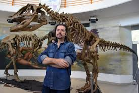

Contacte

Sóc el Dr. Fòssil Juràssic, un paleontòleg apassionat per l’estudi dels dinosaures i la divulgació científica. Des de ben jove m’ha captivat la història de la vida a la Terra, i aquesta fascinació m’ha portat a dedicar la meva trajectòria professional a les excavacions, la investigació i la docència. El meu propòsit és fer arribar al gran públic la importància del patrimoni fòssil i despertar vocacions en les noves generacions
Dades
-
Nom: Dr. Fòssil Juràssic
-
Professió: Paleontòleg
-
Experiència: 10 anys d'excavacions
-
Especialitat Dinosaures sauòpodes i cretaci tardà
-
Correu electrònic: fossil.jurassic@paleo.cat
-
Telèfon: +34 676 890 123
-
Ciutat: Barcelona, Catalunya
Descobriments i publicacions
- Tressor perdut al MachuPicchu (Perú) (Publicació)
- Tressor enterrat a les piramides (Egipte) (Publicació)
- Tressor extraviat de l'imperi xinés (Xina) (Publicació)
Altres enllaços